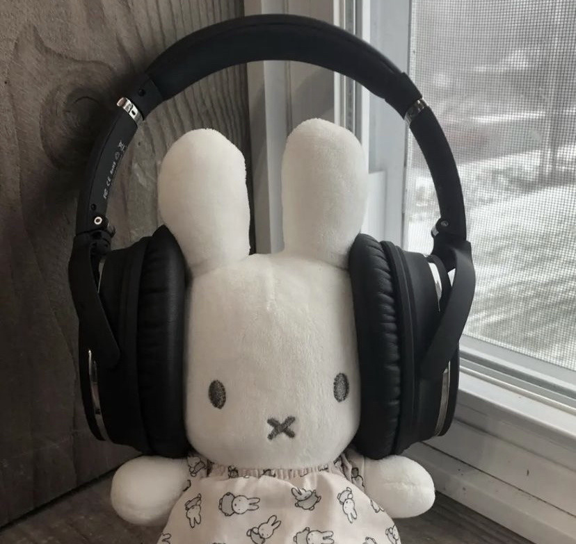
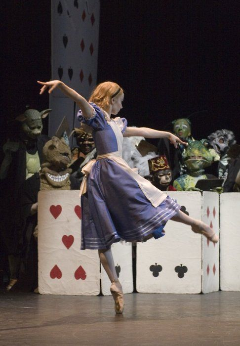
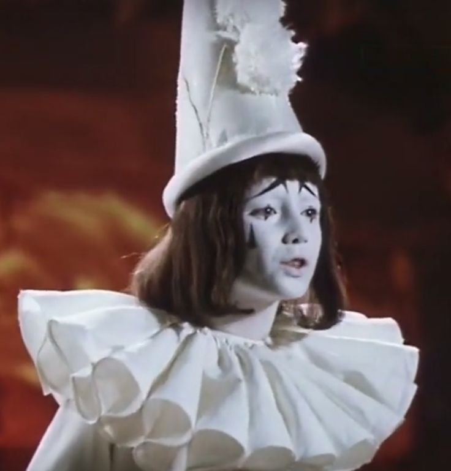

My name is Gracia Kassis and I am a Biochemistry Major and Neuroscience Minor in the MAT program. It's my last year at Mcgill and I'm very interested in both scientific research and developing myself in music - and I hope to some day be able to work in both :)
My favorite genres of music range between Rock, Jazz, Pop, Classical, fusions between those and almost anything in 3/4. My favorite instruments would probably have to be the cello, piano, glockenspiel, accordion, clavinet and bandoneon. I would say I'm an enjoyer of silly things in general! If I were to make a little board of photos that represented me it would look a little like this:
  
This semester I'm taking five classes to work towards wrapping up both my major in Biochem and my minor in Musical Applications of Technology. I'm taking the following:
♪BIOC 454: Nucleic Acids
♪BIOC 450: Protein Structure and Function
♪CHEM 302: Organic Chemistry 3
♪MUSR 200: Audio Recording Essentials
♪MUMT 301: Music and the Internet
While you're here, you might want to check out everybody else's websites :)
♬ Loren's Website
♬ Lianne's Website
♬ Gary's Website
♬ Alex's Website
♬ Ivano's Website
♬ Ben's Website
♬ Jiezhou's Website
♬ Asu's Website
Here's a link to all my other assignments: Directory